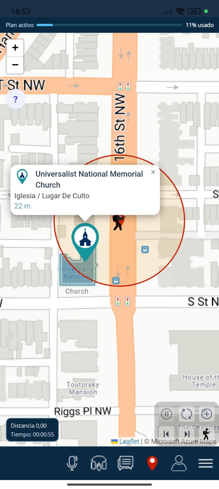
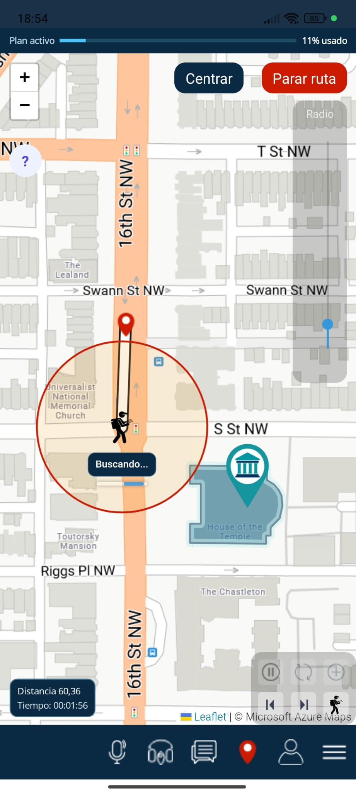
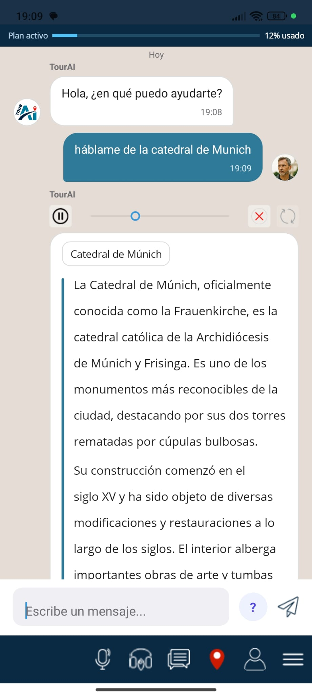
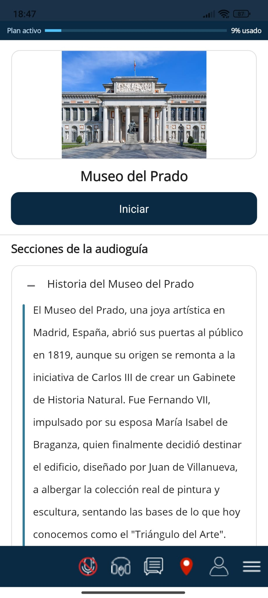
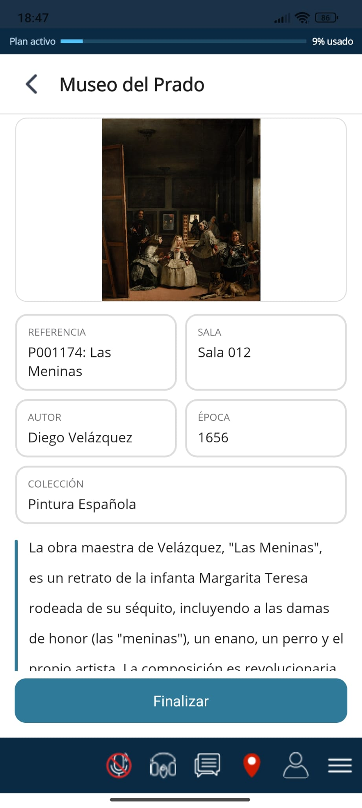
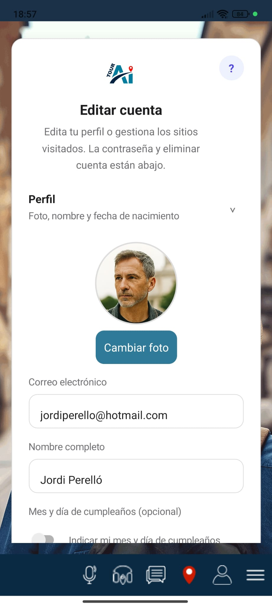

El proyecto
TourAI es un proyecto independiente de turismo digital creado por Jordi Perelló, desarrollador y apasionado de los viajes con sede en España. Nacimos con una idea sencilla: que cualquier persona pueda explorar una ciudad con la misma profundidad que tendría con un guía local, pero a su ritmo, en su idioma y desde el móvil.
Este sitio web, tourai.es, es el portal oficial del proyecto: información sobre la app, contacto, soporte y acceso a la zona privada de cuenta para usuarios registrados.
TourAI en tourai.es (marca oficial)
En buscadores pueden aparecer otras apps o marcas con nombres parecidos («Tour AI», «TourAi», etc.). TourAI —escrito junto y en mayúsculas AI— es el proyecto independiente de Jordi Perelló en España. La app y esta web oficial están en https://tourai.es y el contacto del proyecto es info@tourai.es. Si buscas esta app, comprueba el dominio y las tiendas enlazadas desde tourai.es.
¿Qué hace TourAI?
TourAI es una aplicación móvil que combina inteligencia artificial, geolocalización y audioguías para ofrecer una experiencia de viaje personalizada:
- Chat con IA: pregunta sobre monumentos, historia, restaurantes o transporte y recibe respuestas contextualizadas.
- Consultas por voz: interactúa con la app mientras caminas, sin detenerte a escribir.
- Mapas interactivos: descubre puntos de interés cercanos e inicia recorridos guiados a pie por GPS.
- Audioguías inmersivas: escucha narraciones activadas por tu ubicación al acercarte a cada punto.
- Planes y bonos: adquiere un plan temporal o canjea un bono promocional para usar mapa, chat y audioguías.
La aplicación se encuentra actualmente en fase de desarrollo y pruebas. Las versiones para iOS y Android se publicarán en las tiendas oficiales cuando estén listas.
La app en capturas
Interfaz real de TourAI en español (pantallas de la app móvil):






Cómo funciona en la práctica
Un recorrido típico con TourAI combina mapa, asistente y narración en el móvil:
- Elige destino y plan: inicia sesión, activa un plan temporal o canjea un bono promocional para desbloquear mapa, chat y audioguías.
- Explora el mapa: localiza puntos de interés cercanos y empieza un recorrido a pie guiado por GPS.
- Pregunta al asistente: usa chat o voz para historias, recomendaciones prácticas o dudas mientras caminas.
- Escucha audioguías: al acercarte a un punto, la app puede reproducir narraciones adaptadas a tu ubicación.
Más respuestas en las preguntas frecuentes.
Nuestra misión
Queremos democratizar el acceso a información cultural de calidad. Creemos que viajar no debería depender de contratar tours caros ni de llevar guías impresas obsoletas. TourAI funciona con planes temporales y bonos promocionales que desbloquean el acceso completo a la app.
¿Quieres probar TourAI cuando esté en tienda?
Correo electrónico: info@tourai.es
Web: https://tourai.es
Responsable del proyecto: Jordi Perelló
Transparencia y legalidad
Respetamos la normativa europea de protección de datos (RGPD). Puedes consultar nuestra política de privacidad, los términos de uso y la información sobre cookies. Si tienes dudas, escríbenos desde la página de contacto o revisa las preguntas frecuentes.